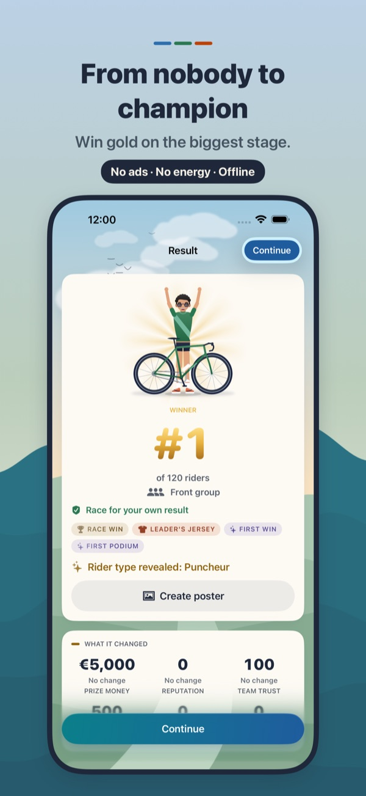
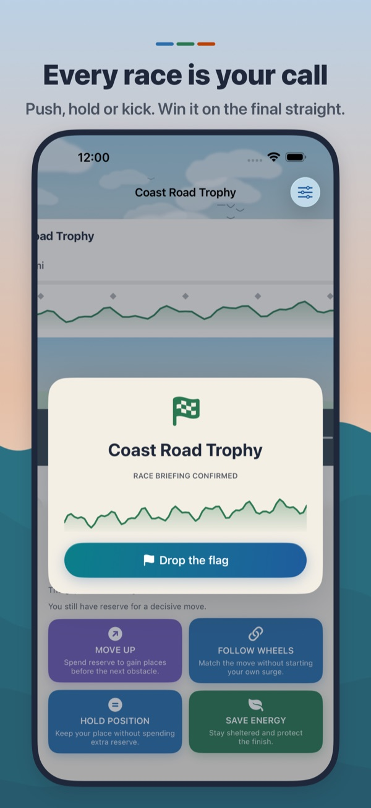
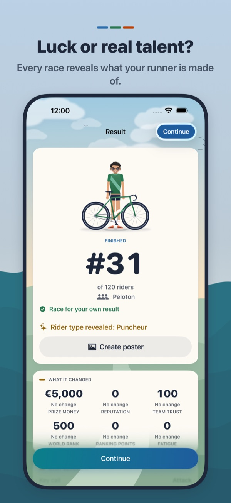
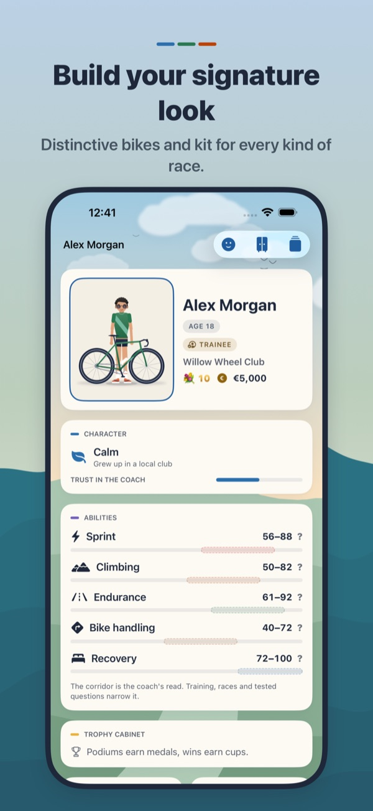
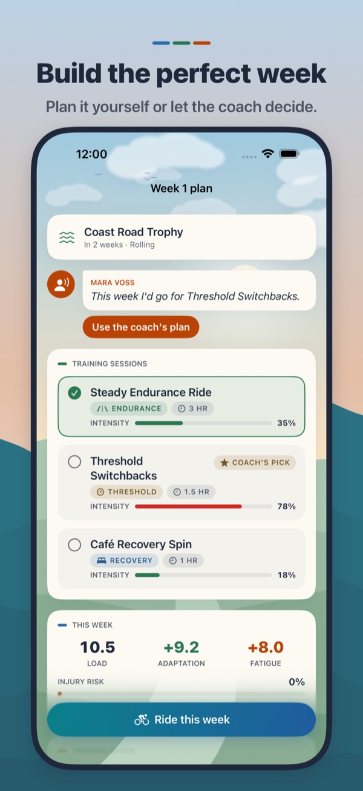
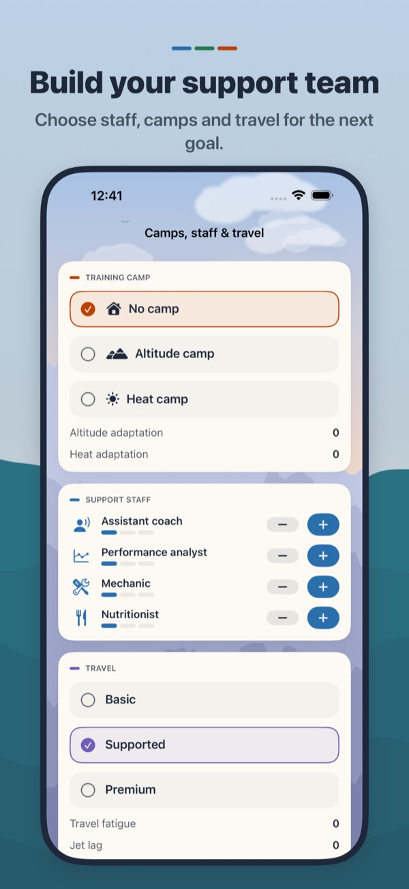
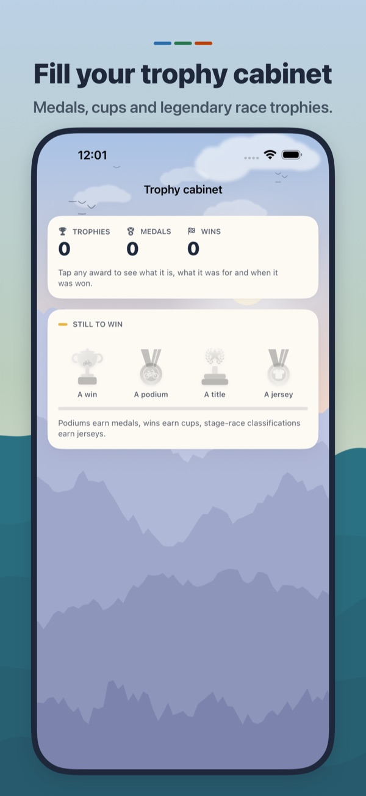
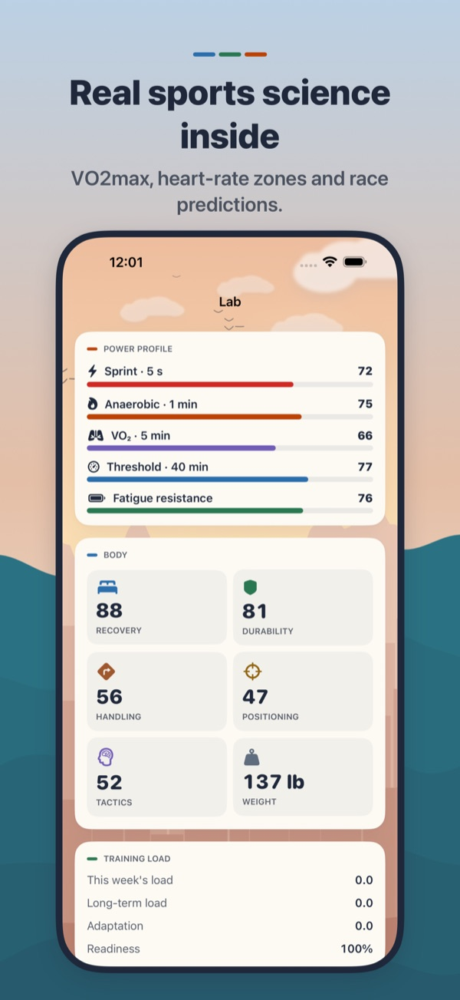
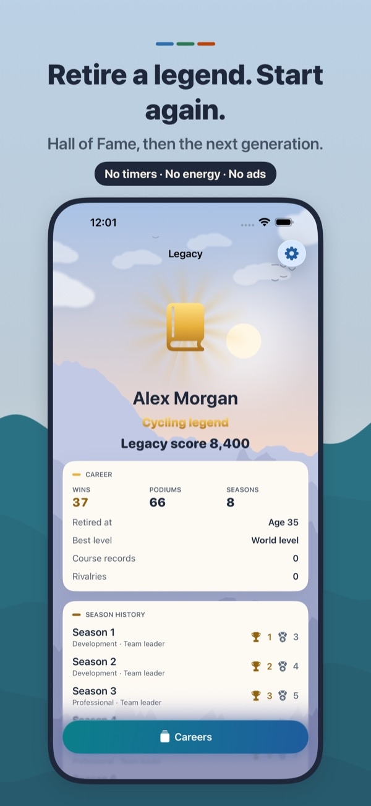

Talent you must earn
Results and coach observations reveal whether you are a sprinter, climber, classics specialist or future Grand Tour leader.
Start as an unknown junior. Plan every week, fight for your place and make the call in every race — until your name belongs in cycling history.

Potential is hidden. Every training block, contract, team order and race result reveals a little more about the rider you are building.
Results and coach observations reveal whether you are a sprinter, climber, classics specialist or future Grand Tour leader.
Balance fitness, fatigue, health and form. Follow the coach or write your own plan, then live with the consequences.
Read attacks, crosswinds and cobbles. Manage feeds, positioning and team orders. Launch your move at the right moment.
Go from junior racing to pro contracts, rankings, national titles, monuments, stage wins and classification jerseys.
Choose coaches, support staff, camps, travel and course-specific equipment. Every advantage has a trade-off.
Records, rivals and trophies survive retirement. Begin again in a world that remembers what your last rider achieved.

Follow the attack or trust the bunch? Spend energy for position or save everything for the sprint? There is no perfect button — only the decision that fits this rider, this race and this moment.







From crossing your first finish line to world rankings, titles, rivalries and a long career.
Danish, German, English, Spanish, Finnish, French, Italian, Japanese, Korean, Dutch, Polish, Portuguese, Russian, Ukrainian and Simplified Chinese.
A deterministic, offline-first career with multiple save slots and accessibility settings.